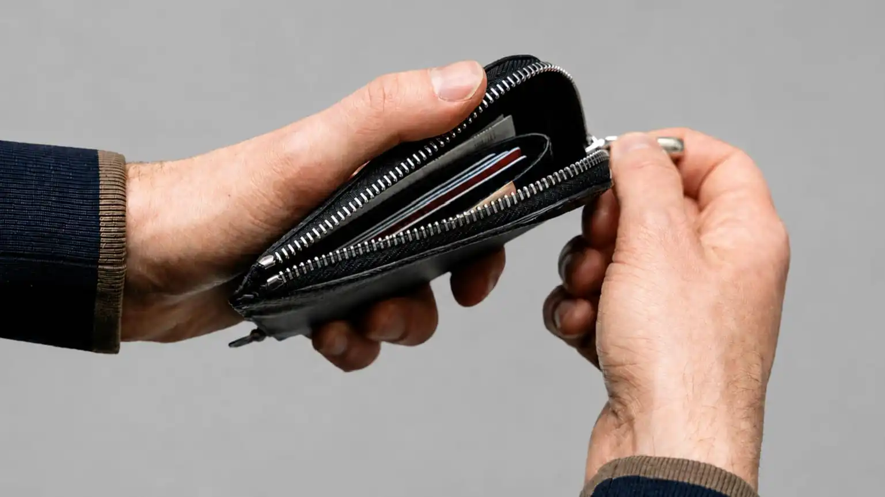

M uchos profesionales buscan avanzar en su carrera, mejorar sus ingresos y conseguir mayor estabilidad. Sin embargo, existe un temor muy real que casi nunca se reconoce en público: el miedo a renunciar o cambiar de empleo sin tener la seguridad de que las cosas saldrán bien.
Para algunos, el trabajo actual es la única fuente de sustento económico. Para otros, se convirtió en una rutina aceptada por inercia o por falta de un plan claro sobre qué hacer a continuación.
¿Qué relación existe entre el dinero y el éxito profesional?
Existe la falsa creencia de que tener un salario alto equivale de forma directa a triunfar en la vida laboral.
Trabajar en una compañía de prestigio o ganar cifras atractivas proyecta una imagen de éxito hacia el exterior, incluso cuando la realidad interna del trabajador es completamente distinta.
Un sueldo elevado no garantiza satisfacción personal, del mismo modo que el prestigio corporativo no asegura tranquilidad mental. El dinero es una variable importante, pero jamás puede definir por sí solo el verdadero éxito en el desarrollo profesional.
- 1. ¿Qué relación existe entre el dinero y el éxito?
- 2. ¿Qué significa realmente tener éxito en la vida?
- 3. ¿Por qué puedes tener éxito en tu trabajo y aun así sentirte atrapado?
- 4. ¿Por qué el éxito no significa ganar más dinero?
- 5. ¿Qué cosas debo hacer para tener éxito?
- 6. ¿Qué debo tener en cuenta a la hora de buscar el éxito?
- 7. ¿El dinero es realmente la clave del éxito?
¿Qué significa realmente tener éxito en el trabajo?
Comprender que el prestigio o un buen sueldo no bastan es el primer paso para evaluar tu situación laboral con honestidad.
No tienes que esperar a que ocurra una crisis para planificar un cambio; puedes usar tu empleo actual como plataforma estratégica de preparación.
Mientras aseguras tus ingresos actuales, adquiere nuevas habilidades, amplía tus contactos y construye opciones a futuro. El objetivo no es huir a la ligera, sino ganar poder de decisión sobre tu carrera.
El éxito que otros ven desde afuera puede sentirse completamente diferente para quien lo vive.
¿Por qué puedes tener éxito en tu trabajo y aun así sentirte atrapado?
Muchas elecciones profesionales se toman siguiendo expectativas ajenas, mandatos familiares o lo que el entorno considera correcto en su momento.
El conflicto aparece cuando alcanzas esa meta y descubres que la realidad diaria no se alinea con tus expectativas.
Tienes estabilidad y un salario atractivo, pero notas que algo vital dejó de encajar.
Las responsabilidades financieras y el temor al qué dirán —especialmente sabiendo que otros desearían estar en tu posición— convierten el supuesto éxito en una carga pesada.
No todo lo que parece un avance desde afuera representa un progreso real para quien lo está viviendo.
El equilibrio entre ingresos, tiempo libre y bienestar personal es clave. Si tu empleo consume todo tu tiempo o el costo psicológico es insostenible, el dinero extra pierde su valor.
El verdadero desarrollo profesional busca alinear tus metas financieras con tu calidad de vida.
¿Por qué el éxito no significa ganar más dinero?
Identificar el momento en que un empleo deja de sumar y comienza a limitar tu crecimiento requiere análisis y perspectiva.
A continuación, analizaremos situaciones frecuentes donde el aparente éxito laboral choca con la realidad diaria.

Estas situaciones demuestran que el crecimiento económico desvinculado del bienestar personal rara vez se traduce en un triunfo real.
El profesional que gana bien, pero no tiene tiempo para su vida
Tiene un salario alto, pero sus jornadas laborales extenuantes eliminan cualquier espacio para su familia, descanso o proyectos personales. Desde afuera triunfa; por dentro, se cuestiona si el costo vale la pena.
La persona que logró el puesto ideal, pero descubrió que no era lo que esperaba
Luchó por años para conseguir ese cargo corporativo y, al llegar, notó que la realidad distaba mucho de su ilusión. El problema no es el empleo, sino que ya no encaja con la vida que desea construir.
El trabajador con más ingresos, pero con mayor desgaste
Sus ganancias aumentaron al mismo ritmo que sus niveles de estrés y responsabilidades. Gana más dinero, pero su energía y estabilidad emocional decaen.
El empleado estable que siente su carrera estancada
Cuenta con seguridad laboral e ingresos fijos, pero lleva años con la sensación de no avanzar hacia sus metas verdaderas. La comodidad frena el impulso de buscar nuevos horizontes.
El sueldo alto que no alcanza debido al alto costo de vida
Sus ingresos nominales son buenos, pero las deudas y obligaciones familiares absorben casi todo. El resultado es una contradicción constante: un trabajo exigente que no se refleja en desahogo financiero.
El profesional que trabaja más sin saber cuál es el propósito final
Cada ascenso exige más sacrificios de tiempo. Llega un punto en que la pregunta clave deja de ser cuánto gana y pasa a ser cuánto de su vida está entregando a cambio.
Abandonar un empleo de golpe es un riesgo innecesario; construir una alternativa profesional requiere un proceso planificado y constante.
No necesitas que tu entorno colapse para decidir construir un rumbo diferente.
¿Qué cosas debo hacer para tener éxito profesional?
Antes de invertir tiempo y recursos en un cambio laboral, define con claridad el rumbo que deseas tomar. Esto te ayuda a filtrar distracciones y enfocar tus esfuerzos en acciones que generan resultados reales.
Así como cualquier carrera técnica o universitaria exige un plan de formación estructurado, alcanzar el éxito en los negocios o en el trabajo independiente requiere identificar qué habilidades y contactos necesitas dominar.
¿Qué debo tener en cuenta a la hora de buscar el éxito?
Define qué tipo de vida quieres antes de decidir qué abandonar
El error más frecuente es enfocar toda la energía en huir de un empleo que no te gusta sin tener claro cuál es el siguiente destino. Establece tus prioridades salariales, de tiempo y de estilo de vida antes de dar un paso en falso.
Identifica las habilidades clave que debes adquirir
La distancia entre tu situación actual y tus metas no se acorta trabajando más horas, sino aprendiendo aquello que aún no dominas. Esto incluye desde competencias técnicas hasta habilidades blandas, negociación o gestión comercial.
Usa tu empleo actual como plataforma de lanzamiento
Mientras aseguras tus gastos mensuales, aprovecha los recursos de tu trabajo actual para potenciar tu experiencia. Ver tu empleo presente como una etapa transitoria de fortalecimiento cambia por completo tu perspectiva mental.
Valida tu alternativa antes de depender totalmente de ella
Un plan profesional es sólido cuando demuestra viabilidad en el mundo real. Antes de dar el salto definitivo, comprueba que tus nuevas habilidades o proyectos tienen demanda en el mercado.
Invierte tu tiempo libre en construir activos profesionales
El tiempo fuera del horario laboral es tu activo más valioso para diseñar el futuro. Destina bloques específicos de tu día a formarte o construir bases sólidas en lugar de desperdiciarlos.
Reconoce el momento adecuado para dar el siguiente paso
No existe una fecha ideal universal. El indicador de preparación se compone de tus ahorros, el dominio de tus habilidades y la solidez de las opciones que has construido en paralelo.
Separa el concepto de dinero y éxito personal
Asociar el triunfo exclusivamente al volumen de ingresos es un error común alimentado por la presión social. El dinero aporta opciones, pero el verdadero éxito abarca la tranquilidad, la salud y el tiempo para disfrutarlos.
La libertad profesional no comienza al renunciar, sino al construir opciones reales de elección.
¿El dinero es realmente la clave del éxito en tu carrera?
El dinero es un recurso valioso, pero no define por sí solo el éxito profesional. Buscar mayores ingresos sin un propósito claro suele conducir al agotamiento.
Evalúa periódicamente si tus metas laborales te acercan al tipo de vida que realmente deseas experimentar. Avanzar de verdad significa caminar en una dirección que tenga sentido para ti, más allá del reconocimiento exterior.
Avanzar con inteligencia requiere estrategia y paciencia. Toma el control de tu desarrollo profesional hoy mismo y construye el futuro que mereces.
Esta información no pretende ser una invitación a abandonar un empleo, modificar planes o renunciar a proyectos que actualmente forman parte de tu vida. Cualquier decisión que implique un cambio importante debe analizarse considerando las circunstancias particulares de cada persona.
Publicado originalmente el 26 Oct 2025. Este análisis forma parte de la colección permanente de estudios sobre desarrollo profesional, riqueza y mentalidad empresarial.